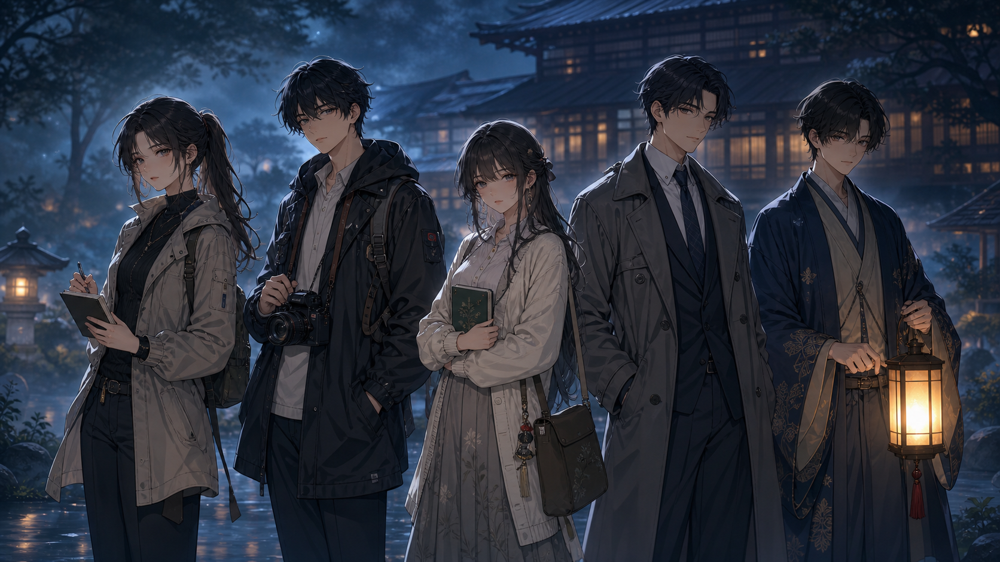

여행 코디네이터 겸 브이로거
霧の向こうの旅館
안개 너머의료칸
친구의 초대로 찾아간 산골 온천마을.
비가 길을 끊고, 밤 아홉 시 십 분,
정원 우물가에서 한 사람이 쓰러진다.
산길은 폭우로 막혔다.
료칸의 불빛만이 안개 속에서 흔들렸다.
피해자는 모두의 비밀을 알고 있었다.
이제, 당신은 누구의 거짓말을 믿을 것인가.
여행은 축제로 시작됐고, 심문으로 끝난다.
일본 나가노현 산골 마을 미즈모리촌. 컬컴 일본어 모임 멤버들은 현지 코디네이터 나카하라 레나의 안내로 오래된 온천 료칸 아오츠키장에 도착한다.
레나는 밤 9시 30분 라이브 방송에서 “이번 여행의 진짜 이야기”를 공개하겠다고 말한다. 20분 뒤, 그녀는 정원 우물가에서 차갑게 발견된다.
호타루 등불 축제의 밤
깨진 유자주 잔과 젖은 발자국
모든 인물은 비밀을 품고 있다.
겉으로는 여행객, 속으로는 각자의 약점을 숨긴 용의자들. 탭을 눌러 각 캐릭터의 공개 정보와 감춰진 의심 포인트를 확인하세요.

탐정
한지윤
이번 여행을 추진한 일본어 모임 리더. 사건을 정리해야 하지만, 레나의 가방에서 몰래 꺼낸 봉투가 마음에 걸린다.
- 공개 알리바이
- 8시 50분부터 손님방에서 참가자 명단을 정리했다.
- 숨은 의심
- 여행 경비 문제를 레나에게 들켰다.
단서는 안개처럼 흩어지고, 말은 서로를 겨눈다.
태블릿 맵에서 장소를 선택하면 단서 카드가 공개됩니다. 홍보 페이지에서는 핵심 단서 일부만 티저로 보여줍니다.
깨진 유자주 잔
잔 안쪽에서 쓴 냄새와 약초 가루가 발견된다.
毒が検出されました。익명 메시지
“정원 우물 앞에서. 옛일을 끝내자.”
井戸の前で会いましょう。젖은 게타 발자국
주방 뒷문에서 정원으로 이어진 작은 발자국.
足跡は庭へ続いています。